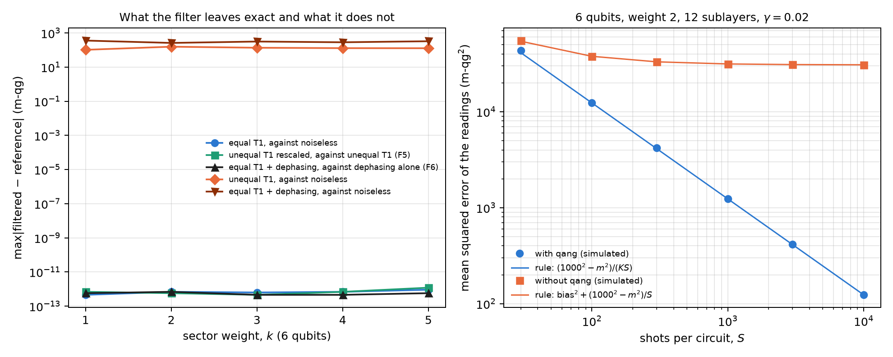
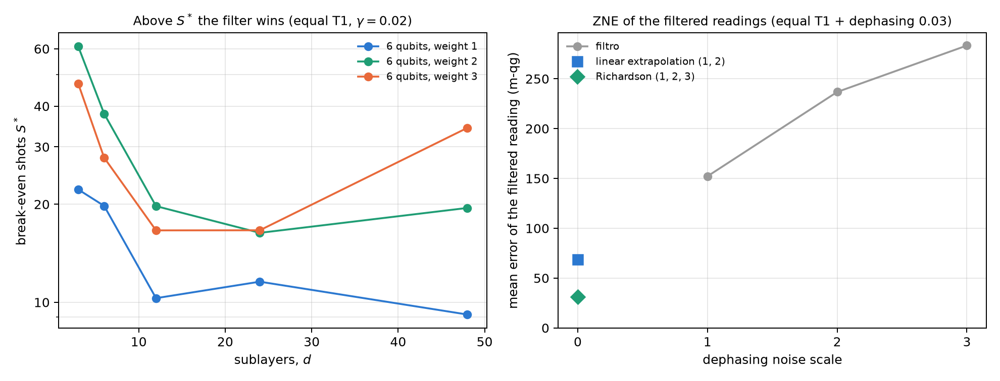

21 The qg symmetry filter and exactness under T1 relaxation
Chapter 20 used the qg filter as a tool: discarding the shots that left the Hamming-weight sector returns the noiseless readout under T1. This chapter treats it as an object. First the theorem and why it holds, on the scale of Chapter 1. Then what it costs, with a closed rule that predicts before running when it pays, and what it does not correct: unequal T1 across qubits, dephasing, and gate and readout errors. For each limit there is an exact property (F5 and F6 in the notes) that says how to go on. The structural facts are checked with code on random states; the classification results are those of the notes, with predictions committed before running.
21.1 From the base: decay pushes the readings to the north pole
Amplitude damping of one qubit has two Kraus operators:
\[ K_0=\begin{pmatrix}1&0\\0&\sqrt{1-\gamma}\end{pmatrix},\qquad K_1=\sqrt\gamma\,|0\rangle\langle1|. \]
\(K_1\) is the jump: the qubit falls to \(|0\rangle\), and its reading goes to \(+1000\) m-qg, the north pole. \(K_0\) is the no-jump evolution: it leaves \(|0\rangle\) alone and multiplies the amplitude of \(|1\rangle\) by \(\sqrt{1-\gamma}\). In a register, the product of the \(K_0\) multiplies every basis state with \(k\) ones by \((1-\gamma)^{k/2}\), the same factor for every state of the weight-\(k\) sector. And any jump lowers the weight by one.
Hence the theorem (notes, §77 and §78 F4): with the same T1 on every qubit, keeping the weight-\(k\) shots returns the noiseless state. The no-jump factor is a scalar on the sector, and it disappears on normalising; everything that jumped is in another sector. It holds between layers of weight-conserving gates, for any strength and any depth. The fraction of shots that survives is \(K=(1-\gamma)^{k\,d}\), with \(d\) the number of damping steps.
| sector (6 qubits) | dimension | max \(\lvert\)filtered − noiseless\(\rvert\) (m-qg) |
|---|---|---|
| weight 1 | 6 | \(4\cdot10^{-13}\) |
| weight 2 | 15 | \(7\cdot10^{-13}\) |
| weight 3 | 20 | \(6\cdot10^{-13}\) |
| weight 4 | 15 | \(7\cdot10^{-13}\) |
| weight 5 | 6 | \(9\cdot10^{-13}\) |
For a weight-2 state with three damping steps, the fraction left in the sector is 0.606355, exactly \(0.92^6\). The filter is a postselection, and what it returns is a conditional probability: the equation of Chapter 1 applied inside the sector.
21.2 What it costs: the mean-squared-error rule
The filter removes the bias and pays in shots: of \(S\) shots only \(KS\) remain. The notes (§94) wrote down before running a closed rule for the mean squared error of the qubits’ readings \(m\):
\[ \text{MSE}_{\text{qang}}\approx\frac{1000^2-m^2}{KS},\qquad \text{MSE}_{\text{raw}}=\text{bias}^2+\frac{1000^2-m_{\text{raw}}^2}{S}. \]
The first is the shot noise of Chapter 1 with \(KS\) shots; the second adds the bias towards the north pole, which does not shrink with more shots. The chapter’s script checks it with 10 random circuits of 6 qubits, weight 2, 12 sublayers and \(\gamma=0.02\) (\(K=0.616\)), 200 repetitions per point:
| shots \(S\) | 30 | 100 | 300 | 1000 | 3000 | 10,000 |
|---|---|---|---|---|---|---|
| MSE with qang, simulated / rule | 1.05 | 1.01 | 1.02 | 1.00 | 1.01 | 1.00 |
| MSE without qang / MSE with qang | 1.3 | 3.0 | 7.9 | 25 | 74 | 249 |
The raw error stalls at about 31,000 m-qg² (a bias of about 175 m-qg), while the filtered one keeps falling as \(1/S\). Setting the two expressions equal gives the break-even number of shots \(S^*\): above it, the filter wins. For the circuits of this chapter \(S^*\) runs from 9 to 61 shots (Figure 21.2, left); on the notes’ grid, from 3 to 110 (108 configurations up to 8 qubits, weight 4 and depth 24, with up to 1000 times less error with the filter).
With very few shots kept (§96, 405 configurations with \(K\) down to \(2.6\cdot10^{-7}\)) the generalised rule, which includes the bias left in the filtered readout, picks the winner in 342 of 342 cases with \(KS\ge5\), also with unequal T1 and dephasing. When less than one shot survives, the filter returns 0 for lack of data, and even so it beats the raw readout in 51 of 57 cases, because the raw one collapsed towards \(|0\dots0\rangle\), the north pole, which is a worse guess than the equator. No regime was found where the shot cost decides against the filter.

21.3 Training through the filter
Since the filtered readout under equal T1 is the noiseless one for every parameter, so are the loss and its gradients, and training with filtered noise is training without noise (§77; Chapter 20 checked it in PennyLane to \(10^{-16}\)). The notes repeated it training from shots (§109), with 100 or 1000 fresh shots per evaluation and SPSA gradients:
| training | with qang | without qang |
|---|---|---|
| exact noiseless probabilities | 0.945 | – |
| shots, \(S=1000\) | 0.939 | 0.929 |
| shots, \(S=100\) | 0.930 | 0.915 |
The prediction was that at 100 shots the filter’s cost would show. It did not: the network trained with qang ended 1.5 points ahead (CI [−1.6, 4.6]). The gradient flattens with the size of the sector, with or without the filter (§112).
21.4 F5: unequal T1 depends only on the ratios
With a different T1 on each qubit, the no-jump factor is no longer a scalar on the sector: it is the product of the \(\sqrt{1-\gamma_q}\) of the excited qubits, different for each state. The filter then leaves a bias: 100 to 160 m-qg with a ±50% spread of the \(\gamma_q\) (Figure 21.1). But the notes found an exact property (§117 F5): a common factor in all the \((1-\gamma_q)\) cancels on normalising, so the filtered readout depends only on the ratios \((1-\gamma_q)/(1-\gamma_r)\). The script checks it by multiplying all the \((1-\gamma_q)\) by 0.85: the filtered readout moves by no more than \(10^{-12}\) m-qg in any sector, and the raw one moves by 640 to 850 m-qg.
The practical consequence is a recipe. Training with the filter under the calibrated rates needs only the relative T1s, tolerates calibration errors and survives a common drift of all the T1s:
| weight | noiseless | A | B | C | C* | D | drift: A / B / C / D |
|---|---|---|---|---|---|---|---|
| 1 | 0.950 | 0.931 | 0.873 | 0.951 | 0.945 | 0.952 | 0.913 / 0.770 / 0.942 / 0.950 |
| 2 | 0.945 | 0.918 | 0.797 | 0.940 | 0.941 | 0.941 | 0.903 / 0.663 / 0.932 / 0.841 |
With recipe C the network lands within 0.5 points of its noiseless accuracy. Under drift, at weight 2 the raw network trained under noise loses 10.0 points and the filtered one 0.7: the raw one learned the absolute rates, the filtered one only their ratios. If one does not want to train under noise, the rule of §82 says how much is tolerated: with the filter alone the loss stays below one point as long as the qubits’ \(1/T_1\) differ by up to ±80% from their mean.
21.5 F6: dephasing, with the filter and extrapolation
Dephasing does not change the weight, so the filter does not see it. But the notes proved another exact property (§118 F6): with equal T1 and dephasing, the filtered readout is the readout with dephasing alone. The no-jump factor is a scalar on the sector and commutes with the dephasing channel, which is diagonal. The script checks it in every sector of 6 qubits, to \(7\cdot10^{-13}\) m-qg (Figure 21.1). The filter turns two noises into one, and that one can be extrapolated to zero (ZNE):
| readout (5 qubits, weight 2, T1 0.08 + dephasing 0.03) | mean error (m-qg) |
|---|---|
| raw | 442 |
| filtered | 152 |
| filtered, linear extrapolation (scales 1 and 2) | 69 (45%) |
| filtered, Richardson (scales 1, 2 and 3) | 31 (20%) |
In the notes’ classifiers (§118, §122, at 5 and 8 qubits) linear extrapolation leaves 50–58% of the error of the filtered readings and Richardson 26–35%; without the filter, ZNE must extrapolate T1 and dephasing together and ends 3 to 10 points behind. With 1000 shots per scale, at weight 2, ZNE loses to the filter alone, because its shot cost eats the gain. What corrects dephasing best in a classifier is something else: training with the filter under the calibrated noise, which recovers the noiseless accuracy (0.951–0.963).
One subtlety (§132–§133): dephasing between RBS gates commutes with the weight and the filter does not see it, but dephasing inside the decomposition of an RBS into native gates turns a phase error into a change of weight. To predict the kept fraction on a device, the simulator has to place that error inside each RBS.

21.6 Gate and readout errors
In IBM device noise models gate errors dominate, and they are not T1. The notes added them to qang’s simulator (§124: a two-qubit depolarising channel after each RBS, with the published error of the native gate) and then each qubit’s asymmetric readout error (§129). Their interest here is one: predicting the kept fraction before running.
| simulated device | device \(K\) | predicted with T1, T2 and gates | + readout error |
|---|---|---|---|
| fake brisbane | 0.671 | 0.703 | 0.665 |
| fake sherbrooke | 0.697 | 0.774 | 0.694 |
| fake torino | 0.724 | 0.845 | 0.783 |
With readout error, the prediction comes within 0.006 of the device on the two devices with ECR gates. On torino (CZ gates) a gap of 0.059 remains, which §132–§133 attribute to dephasing inside the gates. In accuracy, the simplest recipe was the best on those models: train noiseless and run with the filter (182–185 of 189 correct, against 185 noiseless); training with the gate errors helped the raw readout (+1.2 points) but not the filtered one.
21.7 What remains open
The filter’s properties (the theorem, the law of \(K\), F5, F6 and the error rule) are checked with code; the classification accuracies are those of the notes. A run on real hardware is missing, where unequal T1, dephasing inside the gates and readout error act together. And a tool is missing from the libraries: weight postselection with its cost rule is proposed at the end of the book, together with the new version of qang.
21.8 Without qang and with qang
| action | without qang | with qang | difference |
|---|---|---|---|
| read under equal T1 | bias towards the north pole, which does not shrink with shots | exact readout (\(\le10^{-12}\) m-qg) in every sector | in favour: exactness by a theorem |
| decide whether filtering pays | try both readouts | closed rule; the winner is predicted in 99–100% of cases | in favour: the decision is taken before running |
| shot cost | — | exact \(K=(1-\gamma)^{kd}\); break-even at 3–110 shots | in favour: the cost never decided against it on the notes’ grids |
| unequal T1 | the raw network learns the absolute rates; under drift it loses 10 points (weight 2) | depends only on the ratios (F5); training with the filter lands within 0.5 points; drift: 0.7 | in favour with the recipe; against if the filter is used alone with a large spread (up to 2 points) |
| dephasing | ZNE of T1 and dephasing together | the filter leaves dephasing only (F6); ZNE takes it to 20–58% | in favour in readout error; with few shots ZNE does not pay |
| gate and readout errors | — | the simulator predicts \(K\) within 0.006 (ECR) | in favour as a prediction; the filter does not correct them |
Balance. The filter is symmetry postselection, a known mitigation technique. What the notes add are the exact properties (the theorem in every sector, F5 and F6), the closed cost rule, and the recipe for each noise the filter does not correct. The base of Chapter 1 gives the picture: the jump takes the readings to the north pole, and the filter returns the conditional probability on the sector. When the noise is not equal T1, the filter alone is no longer enough, and the answer is to train with it under the calibrated noise.
21.9 In code
import numpy as np
from qang import qml as QML
m = QML.WeightQNN(n_qubits=6, weight=3, layers=2)
rng = np.random.default_rng(0)
psi = np.zeros((1, m.dim))
psi[0, m.idx[3]] = rng.normal(size=20)
psi /= np.linalg.norm(psi)
theta = rng.uniform(-np.pi, np.pi, size=m.n_theta)
g = 0.08 * (1 + 0.5 * np.linspace(-1, 1, 6)) # unequal T1
f = lambda gam: m.qg_z(m.probs(theta, psi, gamma=gam), qang=True)
np.abs(f(1 - 0.85 * (1 - g)) - f(g)).max() # ~1e-15: F5, only the ratios count21.10 Summary
- The jump takes the readings to the north pole and lowers the weight; the no-jump evolution multiplies every weight-\(k\) state by \((1-\gamma)^{k/2}\). With equal T1, the filter returns the noiseless state in every sector, with \(K=(1-\gamma)^{kd}\).
- The rule \(\text{MSE}\approx(1000^2-m^2)/(KS)\) against bias\(^2+(1000^2-m^2)/S\) predicts before running when filtering pays; the break-even is at a few tens of shots, and the cost never decided against it.
- With unequal T1 the filtered readout depends only on the ratios of the rates (F5): training with the filter under the calibrated rates recovers the accuracy and withstands a common drift.
- With T1 plus dephasing the filter leaves dephasing only (F6), which is extrapolated to zero or, in a classifier, corrected by training with the filter under the noise.
- With gate and readout errors, qang’s simulator predicts a device’s kept fraction; the filter does not correct them.